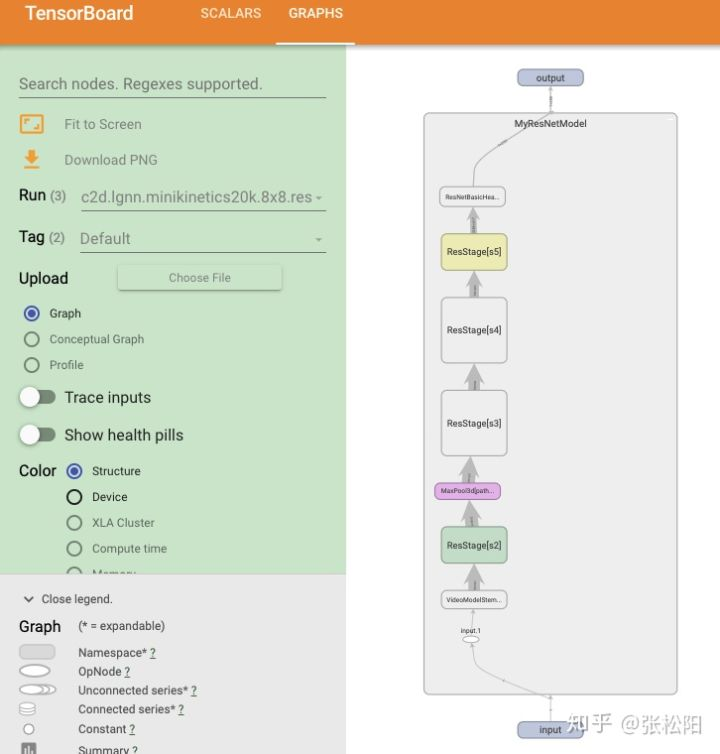
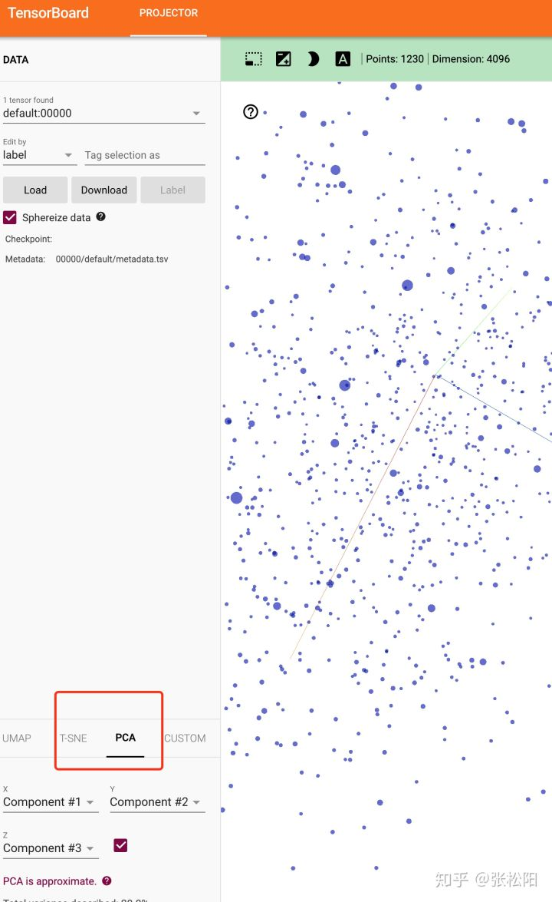

PyTorch Tips(FLOPs计算/参数量/计算图可视化/相关性分析)

最近在做Research Project的时候，发现有些小工具很好用，记录在此。
1. 准确的FLOPS 计算
网上开源的很多计算flops的工具只支持计算PyTorch内置层的flops,不能有效计算出自定义操作的flops。Facebook日前开源了一个面向PyTorch的CV工具包，内置了flops_count函数，支持细粒度的flops计算，包括torch.einsum，torch.bmm等操作均可计算。同时还支持自定义一个operation白名单，用来控制计算那些操作的FLOPS。
2. 参数量计算
这个比较常用了，记录在此，方便查阅
def params_count(model):
"""
Compute the number of parameters.
Args:
model (model): model to count the number of parameters.
"""
return np.sum([p.numel() for p in model.parameters()]).item()
3. 画出计算图
PyTorch 1.4版本内置了tensorboard，支持add_graph ，可以将我们定义的模型的计算图可视化出来，可以直观的看到每一层的size，和数据流向，为模型调试和验证提供了很好的帮助
参见文档: https://pytorch.org/docs/stable/tensorboard.html

4. 相关性分析
TensorFlow里有一个很好用的高维特征分析工具Projector, 内置TSNE和PCA。最新的PyTorch也加入了这个支持。可以先去http://projector.tensorflow.org/ 体验一下online版的。
这个功能支持2D/3D的分析，同时可以交互式的点选，十分酷炫好用。
import torch
from torch.utils.tensorboard import SummaryWriter
writer = SummaryWriter("./visualization")
cat_features = np.loadtxt("category_features.txt")
cat_labels = torch.load("category_labels.txt")
writer.add_embedding(cat_features, cat_labels)
writer.close()

Songyang Zhang
PhD Students
My research interests include few/low-shot learning, graph neural networks and video understanding.